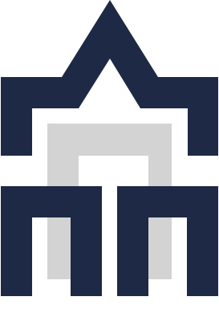

Дни проведения
Турнир проходит по средам и пятницам на 7-м уроке.

СРЕДА И ПЯТНИЦА · 7-Й УРОК · 10 МИНУТ
Сетка формируется после результатов всех 6 основных матчей. При ничьей в плей-офф выберите победителя.
| # | Команда | И | В | Н | П | ЗМ | ПМ | РМ | О |
|---|
Сортировка: очки → разница мячей → забитые мячи.
Турнир проходит по средам и пятницам на 7-м уроке.
Результаты и очки подсчитываются автоматически и отображаются в общей турнирной таблице.
Приходить в рубашке и школьных брюках нельзя. Все участники должны быть в спортивной форме.
Помните: это всего лишь игра. Играйте честно, уважайте соперников и получайте удовольствие!